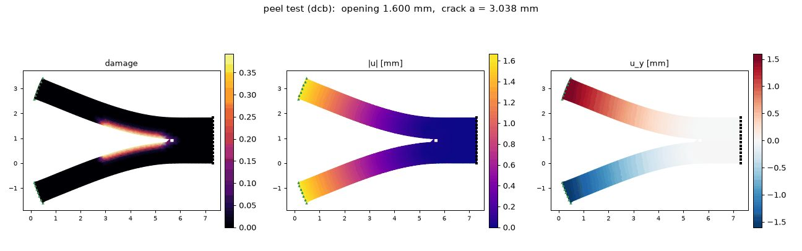

Computational Mechanics · Peridynamics · Differentiable
Differentiable
meshless mechanics.
Differentiable, autodiff-based peridynamics for nonlinear solid mechanics: brittle and hydraulic fracture and delamination (Mode I and mixed-mode peeling), with cracks that start, branch and run with no remeshing and no crack-tracking rules. Peridynamic fracture and peeling, differentiable end to end.
At a glance
- Problem
- Brittle fracture, pressure-driven (hydraulic) fracture and delamination (Mode I and mixed-mode peeling) without remeshing.
- Method
- A differentiable, autodiff-based meshless peridynamics solver (JAX, PyTorch), with a matrix-free dynamic-relaxation scheme in place of Newton–Raphson.
- Physics & math
- A nonlocal bond model in which damage is bond breakage. Dynamic relaxation converges through unstable crack propagation, where Newton–Raphson tangents become singular.
- Result
- An 8–10× runtime speedup and 9.7×10−11 agreement with a validated reference solution. The full study is to be published.
We have implemented brittle fracture, fluid-induced (hydraulic) fracture and delamination (the peeling test) using peridynamics, a nonlocal, meshless continuum theory in which material points interact through bonds rather than through spatial derivatives. Because damage is simply the breaking of bonds, cracks nucleate and propagate naturally — including along interfaces — without a mesh that has to be adapted to the crack path.
This is a collaboration with Prof. Ali Javili ↗ (Bilkent University).
Peridynamics in brief
Each material point \( \boldsymbol{x} \) interacts with every point \( \boldsymbol{x}' \) inside its horizon \( \mathcal{H}_{\boldsymbol{x}} \), a ball of radius \( \delta \). The pair is joined by a bond, and the force a point feels is an integral over its bonds instead of a divergence of stress — so the equations stay valid where the displacement field is discontinuous, i.e. across a crack.
The equation of motion is
where \( \boldsymbol{f} \) is the pairwise bond force and \( \boldsymbol{b} \) the body force. With the reference bond \( \boldsymbol{\xi}=\boldsymbol{x}'-\boldsymbol{x} \) and relative displacement \( \boldsymbol{\eta}=\boldsymbol{u}'-\boldsymbol{u} \), the bond stretch is
A bond breaks irreversibly once its stretch exceeds a critical value \( s_c \), and the local damage is the fraction of broken bonds,
Fluid-induced fracture
A pre-cracked solid is loaded by fluid pressure acting on the faces of the crack. As the pressure is ramped up, the crack opens, the fluid follows it, and the interface ahead of the tip delaminates. Colors show damage, displacement magnitude and vertical displacement on the deformed specimen.

Peeling test
In the peeling test the arms of the pre-cracked specimen are pulled apart under displacement control. The simulation records the grip force and the crack length as the interface peels.

Differentiable by design
The framework is fully differentiable: it is written with automatic differentiation in JAX and PyTorch, so exact derivatives of the simulation are available for tangents, sensitivities and gradient-based inverse design or learning. The equilibrium states are computed with a matrix-free dynamic relaxation scheme, which avoids the singular tangents that can stall a Newton–Raphson iteration during unstable crack propagation.
Results
- An 8–10× runtime speedup.
- 9.7×10−11 agreement with a validated reference solution.
- Hydraulic fracture and Mode I / mixed-mode peeling simulated without remeshing.
The full study, with the details behind these numbers, will be published soon. The same idea of residual, automatic differentiation and matrix-free solution drives the differentiable finite-element solver, so differentiable simulation here is broader than FEA.